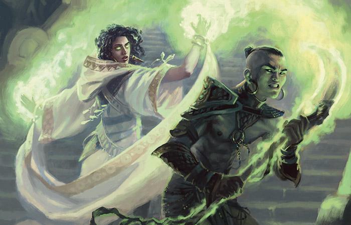
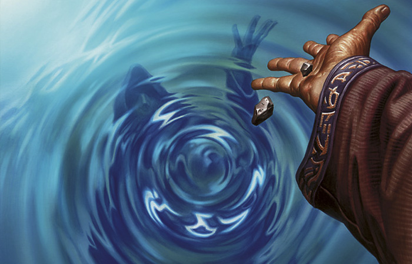
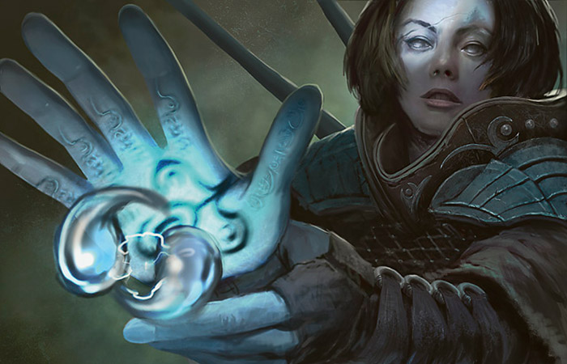
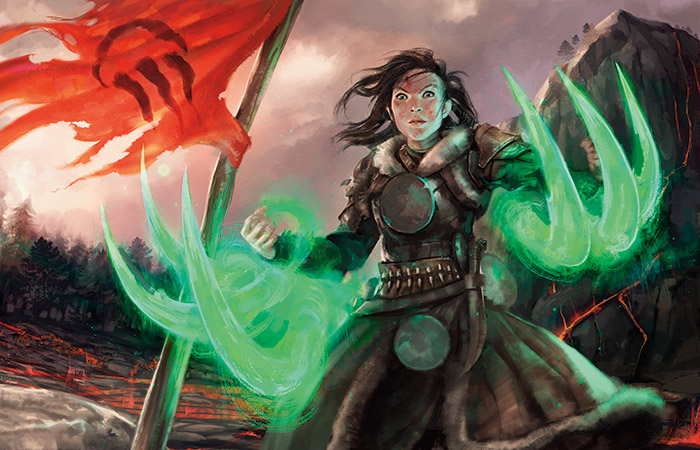

作者：Mark Rosewater
译者：Pa_Cha
原文地址：https://magic.wizards.com/en/articles/archive/making-magic/nuts-bolts-three-stages-design-2015-03-30
译文地址：http://www.iyingdi.cn/article/5650/share?shareFrom=android&skin=day%E2%8C%A9=SC
我每年都会撰写一篇叫作“螺母和螺栓”的文章，旨在帮助那些热衷于自制万智单卡的朋友们更好地设计一个完整的DIY系列。文章将带您一窥万智牌的设计流程，并讲解一些非常实用的设计技巧。即使您不打算DIY万智单卡，我也希望本文能让您更加了解设计工作是如何来体现其作用的。首先让我们快速回顾一下前六篇“螺母和螺栓”文章的主要内容。
螺母和螺栓：卡牌代码：作为首篇螺母和螺栓系列文章，它介绍了我们在制订卡牌文档时做使用的代码。卡牌代码包含了这张牌在系列中的定位细节，而这一信息则对解读整个系列的设计理念至关重要。
螺母和螺栓：设计骨架：第二篇文章介绍了创建卡牌文档时最有用的工具之一，即所谓设计框架。
螺母和螺栓：设计骨架的填充：第三篇文章介绍了如何以普通牌为重点，对设计框架进行填充。
螺母和螺栓：更高稀有度的卡牌：第四篇文章着重讲述其他稀有度卡牌对设计框架的填充。
螺母和螺栓：初始对局测试：第五篇文章谈到了如何对卡牌系列进行最有效的对局测试。
螺母和螺栓：重新审订：第六篇文章介绍了重新审订的概念。这个过程将有助于卡牌系列合理度的提升。
接下来就到了今天这篇文章了。此次我将把讨论重点集中在万智牌设计的整体结构上。大家已经知道，设计工作的流程就是填充设计框架、对局测试，以及重新审订。不过在万智牌的整体结构中还存在着三个更大的阶段。本文就将介绍这三大阶段以及它们是如何帮助设计者对当前设计工作进度进行定位的。
阶段概述
在几年前Mark Gottlieb初任设计总监的时候，他找到我并表示有兴趣将万智牌的设计过程进行划分。这样一来不但有助于进行设计培训，而且也能让设计工作之外的人了解我们的计划。Mark Gottlieb希望将整个设计过程划分为不同阶段，从而使设计工作不再是“暗箱操作”的状态，而变得更易于解读。
于是我俩根据设计工作的内容一步一步地进行了探讨。最终我们根据内容特点其划分为了三个等时长的阶段——期愿阶段、整合阶段和改良阶段。以一个设计周期为一年的大系列为例，上述三个阶段将各持续四个月的时间。本文的目的就是阐述我们在这三个阶段中是如何工作的，并且让大家了解每个阶段对于卡牌文档的修改、对局测试以及重新审订的影响究竟是怎样的。

期愿阶段
第一个阶段就是要为卡牌系列建立“期愿”。这个系列具体是关于什么内容的？主题是什么？包括哪些机制？准备对玩家造成什么样的情感冲击？以什么样的背景故事作为支撑？总之，这第一个阶段就是对卡牌系列进行定义，构思其架构并建立基础。
我们在设计工作正式开始前都会有一个被称作“探索设计”的过程。（曾几何时我们将其称作“预先设计”，欲知详情请点击这里。）探索设计的目的并非寻找答案，而是提出问题。毕竟在设计工作开始前，真正了解这个卡牌系列对我们的约束和限制都有哪些是十分重要的。探索设计让我们可以有充足的时间对可能面临但还尚未面临的问题进行思考。探索设计团队还会在卡牌系列的机制方面为我们提供许多建议。有了这个过程，当我们的设计工作开始时，就并非是一切从零开始了。
期愿阶段的作用包括六个方面：
一、建立共同目标
一个设计团队会拥有很多资源，但这些资源却并不全都指向相同的方向，这样就会导致不少无用功的产生。期愿阶段的首要作用就是能够明确整个团队的工作目标。这点不仅适用于设计团队，而且应该延伸至整个公司。从创意到开发，再到数码产品、组织比赛及产品营销，我们希望参与这个卡牌系列相关工作的每个个体都能拥有共同的奋斗目标。
二、激发创意
我一直我一直秉持着“约束激发创意”的信念。若想创意如泉涌，就需要让自己的思维脱离惯常的方向和角度。建立期愿的过程就像是描绘出一幅拥有全新探索空间的画卷。对于设计团队来说，每次设计工作的目标就是要走出与此前所做的设计不同的道路。
三、定义重点
如果认为所有事情都重要的话，就相当于什么都不重要。期愿阶段的工作不仅可以帮助团队确定应该优先考虑哪些事情，还能在工作中遇到障碍时为我们指明方向。
四、奠定基础
建立一个卡牌系列最困难的部分就是对最初两张牌的定位，因为没有任何参考信息。设定期愿便可以帮助设计团队确定扮演着整个系列塔基角色的最初两张牌的设置。

五、节省时间
在开始设计之前，卡牌系列的可能性是无限的。但这种无限性十分可怕。我们在期愿阶段每作出一个选择就意味着去除掉了大量设计可能性。尽早缩小设计范围非常重要，这样可以为后续的设计工作节约大量时间。
六、和谐气氛
人们都喜欢在有计划的领导手下工作。期愿阶段的工作会让员工们坚信自己日后所投入的精力和时间都会被高效地体现在产品上。
下面来看看期愿阶段会对卡牌系列设计中的不同部分产生哪些影响：
卡牌文档
在这个阶段中我们将会设计出所有普通牌和大多数非普通牌。这个阶段的目标就是要达到能让我们开始进行对局测试的要求。对局测试在一开始是全部使用普通牌来进行的，最后会加入非普通牌。另外，在这个阶段中，我们还会开始明确这个系列将拥有哪些机制。虽说在这个阶段结束时，并非所有机制都会被确定下来，但通常都会明确新系列中半数的机制。不过这些明确了的机制并不一定就是它们最终正式发售时的样子，但有了它们，我们就能对整个系列的设计方向做到心中有数了。
显然，在期愿阶段结束时，我们便会形成一系列期愿——卡牌系列主题的含义、设计所需围绕的机制空间是什么，以及整个系列的基本架构是怎样的。总之，当一个定义完善的设计框架形成后，期愿阶段就可以告一段落了。此时虽然所有稀有及秘稀单卡还都没被设计出来（偶尔会有些稀有或秘稀单卡会在设计普通和非普通单卡是被顺带设计出来），但对于希望做出什么样的稀有和秘稀单卡的问题，我们已经了然于胸了。
对局测试
只要普通牌设计完毕就可以开始对局测试了。不过请记住，我们在前期做出的许多单卡都暂时未考虑主题和机制问题。也就是说它们可能会在日后发生很大改变。期愿阶段的对局测试通常每隔两到三周进行一次，在此期间我们会对卡牌文档做出重大修改。对局测试是对这些修改进行试验的绝佳时机。不要惧怕在对局测试中试验一些疯狂的想法，因为你可以借此来收集信息。这个阶段的对局测试基本只会采用现开这一种模式。
此外，在此阶段中，我建议在卡牌文档未改变的情况下进行多次测试。这样做的目的是就是要弄清所有单卡中，那些设计元素是有意义的，哪些意义不大。需要注意的是，每次测试都要优先选择不同颜色和套牌思路来进行。对局测试的目的不是赢得胜利，而是体验整个系列的感觉。最后，我建议在前期对局测试中按照“双原则”来进行，即除非主题需要，否则不要在一套牌中使用两张相同的单卡；以及当需要在套牌中放入第二张已用单卡或一张新单卡时，选择后者。

重新审订
在第一个阶段里，面对每次对局测试后所进行的大量修改，你希望得到更长的重新审订时间。我们会在前期对局测试中获知许多信息，因此不要惧怕将这些信息用来进行大量修改。我在此想给出的建议是，不要因为一些卡牌上的机制或主题在对局中的意义不大，就否定整个系列机制或主题的设计方向。早期重新审订中更多是发现哪些机制或主题在对局中意义比较重大，并促使我们在接下来的设计工作中做出更多涉及这些机制或主题的单卡。
别忘了R&D把每个阶段的时长均定为四个月，也就是说我们要在规定期限内完成每个阶段的任务。但您在DIY一个卡牌系列时却不用顾忌时长问题。所以，请不要在期愿并未完全形成时就结束期愿阶段。毕竟如果地基打不牢，大楼终将会倒塌。到时候再想回过头来修改就来不及了。
整合阶段
如果说期愿阶段所定义的是“为何”，那么整合阶段所定义的就是“怎样”。我们会在这个阶段观察设计工作各部分的整合在一起后的状况，其中包括卡牌系列设计内的问题，以及设计工作之外的一些事情。此时我们需要考虑设计工作将会与R&D以及威世智其他部门产生怎样的互动。另外，我们在期愿阶段遗留下了卡牌系列的很多零散构件，此时就是将它们整合在一起进行调试和完善的时候了。
整合的作用如下：
一、将机制调节至正确轨道上来
在期愿阶段，我们已经找到了可以支持系列主题的机制。到了整合阶段，我们需要把这些机制的效果调整至最合理的状态。总之，这个中间阶段的主要工作就是测试和完善。
二、在各个组件间建立联系
我们在期愿阶段所添加进系列之中的每个组件，基本都是为了迎合期愿设定的需要。但到了整合阶段，我们就要开始考虑这些组件间应该进行怎样的互动。事实上，既然它们可以在期愿阶段被放在一起，就说明这些组件之间存在着某些固有配合，但也并不都是如此。整合阶段的工作就是弄清这些组件间的互动关系，并找出那些需要去掉的部分。
三、对系列进行补充
随着系列的不断完善，我们将逐渐开始发现一些“缺口”。机制和主题的调整和变化会导致这些构架上的缺口产生。整合阶段所添加的许多内容都将起到对这些缺口的填补作用。
四、删除不需要的元素
随着对卡牌系列测试的深入，我们会发现一些并不能很好服务于这个系列的内容，并将其删除掉。对于这些被删除的内容本身来说，有些可能是非常好的设计构想，但却与整个系列并不匹配。此时，无论这个设计多么巧妙，都要将其删掉。万智牌是一个贪得无厌的怪兽，未来必将会有许多适合这些巧妙设计发光发热的地方。
五、放大缺点
整合阶段并不只是让我们发现那些有意义的部分，同时也会把卡牌系列中最不尽人意的一面展现出来。有时，我们在发现某个缺点后会将其去掉。但更多时候我们并不会那样做，毕竟每个系列都会有缺点，更好的处理方法是想办法对其进行修改和调整。
六、对可能发生的问题加以说明
在卡牌系列被印刷出来前，我们需要做好面对一切变数的准备。整合阶段的一部分工作就是要与公司的其他部门进行交流和沟通，告知他们一些设计内容方面可能会发生的问题。比如说，我在整合阶段添加的一些新机制以及整个系列的卡牌模板在规则上都已经不存在任何问题了。但这些机制所发挥的功能是否真和我想象的一样？牌面上用来解释这些机制的文字会不会过于冗长？这两个问题的答案都会对这个机制最终能否顺利过关产生巨大影响。
我们来看看这个阶段都会对设计造成怎样的影响：

卡牌文档
在这个阶段开始时，我们就已经拥有全部的普通和非普通牌了。当整合阶段结束时，整个卡牌文档就彻底完成了。虽然这并不意味着每张单卡都会原封不动地通过下个阶段，但一份涵盖了整个系列所有单卡，并可以进行对局测试的文档已经形成了。鉴于这个阶段自始至终都在做调整工作，因此卡牌文档也会不断地被修改。随着这个阶段的推进，卡牌文档所发生的变动也将从大规模的替换改为了对个别单卡的微调。
在这个阶段的最后，我们整个系列的单卡就全部出炉了。每张单卡都应体现出我们希望它在系列中所发挥的作用。此过程中如果发现需要继续改善的地方，可以在卡牌文档中进行标注。如果一切顺利的话，所有机制都将在整合阶段结束时确定下来。
对局测试
在此阶段中，对局测试每隔一到两周进行一次，所采用的模式将从限制过渡为构筑。构筑赛测试是在已有相当数量的稀有牌被设计出来后才能开始进行的。套牌的构筑将以系列内单卡围绕系列主题来进行。构筑赛测试的重要性在于，它能够帮助你发现那些在限制赛中并不明显的设计缺陷。对卡牌文档进行查漏补缺的最好办法就是构组一套牌，然后通过套牌的运作来发现问题。
限制赛测试也将从整合阶段前半程的现开模式，转变为后半程的轮抓。只有当系列主题已经牢靠到足以让玩家围绕其进行轮抓后，轮抓模式的测试才能开始。轮抓测试的重要性在于，它能够对系列主题进行测试，从而保证该系列的限制赛具有足够的深度。
重新审订
在此阶段，每次对局测试之间所作出的改动将会变少。这并不是说你不能在此时做出重大改变，只是需要大规模改动的地方变少了。随着改动的减少及测试模式的增加，对局测试将会变得更为频繁。
就像期愿阶段会以一个期愿作为结束一样，整合阶段将会以一个完整系列的出炉作为终结。但设计工作至此尚未结束，我们还要经历下一个阶段。不过此时你一定会希望已有的这些卡牌最终能够全都被印刷出来。
改良阶段
我们会带着整个系列的全部单卡来到这个阶段，并在接下来的四个月里对它们不断地进行改良。“开发设计”流程将在这个阶段进行到一半时开始，届时开发团队将针对这个卡牌系列进行碰面，并为设计工作提出具有一定深度的反馈。由于卡牌系列将为交付开发做好准备，所以此阶段中所进行的改动要比前一阶段略有增加。
改良的主要作用如下：
一、为卡牌系列找到最佳定位
之前对卡牌系列的设计工作所遵循的一直都是我们的整体规划。改良阶段将把卡牌系列所表达的主题调整到最佳位置。可以说之前所进行的是宏观设计，我们一直都在根据整体蓝图进行设计。而改良阶段所进行的就是微观设计，我们会用放大镜去寻找卡牌系列中尚需完善的地方。
二、纠错
这里我想借用的一个比喻就是制作雕塑。我们开始拿到的是一大块石头，而需要做的就是将那些不属于雕塑成品的部分凿去。我们前期的设计工作会专注于发现那些万智牌历史上尚未涉及的设计空间。而在改良阶段，我们则需将卡牌系列与过去系列的主题混在一起进行测试。这时就会发现很多混乱的地方。而这些影响到我们设计工作（以及一部分开发工作）的混乱之处就需要被凿去。
三、调整与背景故事的联系
设计团队与创意团队的沟通是贯穿整个设计流程的。只不过前期设计的沟通内容主要都是宏观问题。随着改良阶段的到来，是时候将卡牌与背景故事中的一些特定元素创建联系的时候了——人物、地点、情节元素。比如传奇生物或鹏洛客（主要在开发环节中不断加入）通常都会在这个阶段被设计出来。
四、做出最后的改动
许多的设计内容旨在突破限制或尝试新的方法。这类设计至此应该告一段落了，此时我们会对这些设计内容进行审视并最终确定其是否可行。倘若您听说我们的某个疯狂设计最终成行了，那么正是改良阶段通过了对它的审核。总之，改良阶段是一个严肃审视这个卡牌系列的时段，我们需要确认整个系列的所有元素全部切实可行。
改良阶段对设计工作的影响：
卡牌文档
这个阶段将以第一份全牌表作为开始，并以全牌表的最终版本作为结束。我们将根据卡牌文档中的标注进行修改，并确认所有单卡的合理性。几年前，我们会在设计工作临结束前从卡牌文档中去除掉66张单卡，以备开发过程中替换那些被删掉的单卡。
对局测试
这个阶段中的对局测试每周进行一次。按照传统，设计团队每周召开两次例会。于是，每周的第一次例会我们将进行对局测试，而第二次例会则对测试结果进行讨论并修改卡牌文档，如此往复。我们在改良阶段所做的改动要细小很多，在临近阶段末尾时尤甚。此时的修改主要会是法术力费用或生物的力量/防御力。这个阶段很重要的一点就是会邀请设计团队之外的人员加入对局测试。一旦进入到开发环节，开发团队的人员也将加入到对局测试的队伍中来。这个阶段的对局测试我们将继续采用构筑和限制两种模式，其中限制赛主要以轮抓的形式来进行。
重新审订
改良阶段的重新审订最为快捷，因为每周都会有些改动。在对局测试中有人发现某张单卡上的一个问题并立刻拿起笔草草记下是司空见惯的事情。在这个阶段里，我们更加关注的是每张单卡会对整个系列的氛围造成怎样的影响，而修改一张牌往往意味着一连串的变化。
经过这三个阶段（一年的时间）后，设计工作结束，卡牌文档被交付开发。在此过程中，卡牌系列的首席设计师将编写一份“设计理念”文件对卡牌系列的期愿和设计工作中所做的每个决定加以说明。
“万事俱备”
希望今天这篇文章能让您从更高的视角了解卡牌系列设计工作的流程。就像我前面提到的那样，我们的工作有着严格的完成期限进行限制，而您在DIY卡牌系列时完全不用受到R&D日程表的束缚。
和往常一样，希望看到大家对本文的反馈，以及对未来《基础概念》系列文章内容的期望。您可以发送电邮或在我的社交网站上留言与我进行互动。
下周我还会带来一篇关于龙的文章。
希望诸位用自己的DIY系列玩得开心！